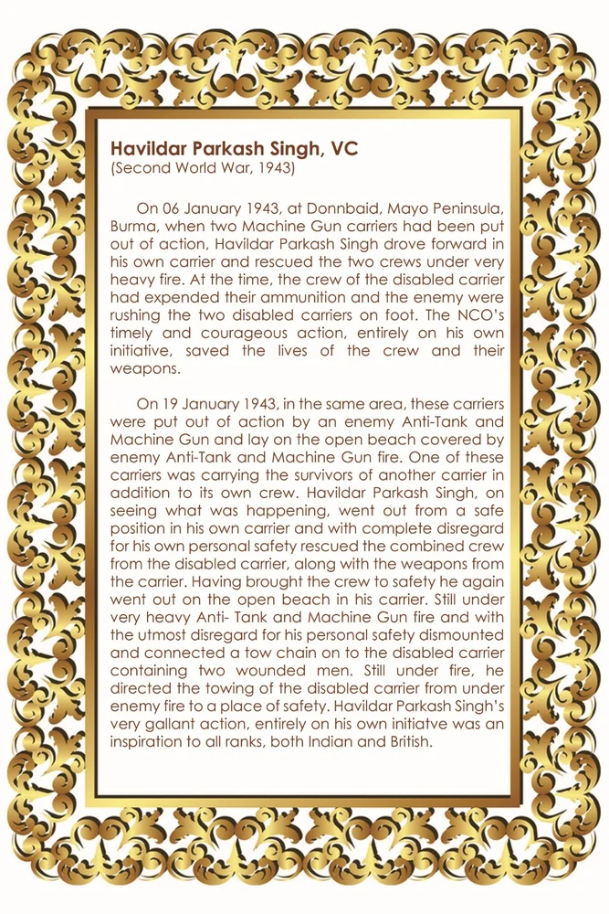

हवलदार प्रकाश सिंह, वीसी
शीर्षक: Havildar Prakash Singh, VC
श्रेणी: हॉल ऑफ फेम
Award: विक्टोरिया क्रॉस
Era / Action: Second World War, 1943
हवलदार प्रकाश सिंह, वीसी
उद्धरण (लिखित):
हवलदार प्रकाश सिंह, वीसी (द्वितीय विश्व युद्ध, 1943) 06 जनवरी 1943 को डोनबैड, मेयो प्रायद्वीप, बर्मा में, जब दो मशीन गन वाहकों को कार्रवाई से बाहर कर दिया गया था, हवलदार प्रकाश सिंह अपने स्वयं के वाहक में आगे बढ़े और दोनों कर्मचारियों को बहुत भारी गोलीबारी के बीच बचाया। उस समय, विकलांग वाहक के चालक दल ने अपना गोला-बारूद खर्च कर दिया था और दुश्मन दो विकलांग वाहकों को पैदल ही दौड़ा रहे थे। एनसीओ की समय पर और साहसी कार्रवाई, पूरी तरह से उसकी पहल पर, चालक दल और उनके हथियारों की जान बचाई गई। 19 जनवरी 1943 को, उसी क्षेत्र में, इन वाहकों को दुश्मन के एंटी-टैंक और मशीन गन द्वारा कार्रवाई से बाहर कर दिया गया था और वे दुश्मन के एंटी-टैंक और मशीन गन की आग से ढके खुले समुद्र तट पर पड़े थे। इनमें से एक वाहक अपने चालक दल के अलावा दूसरे वाहक के बचे हुए लोगों को भी ले जा रहा था। हवलदार प्रकाश सिंह, यह देखकर कि क्या हो रहा था, अपने स्वयं के वाहक में एक सुरक्षित स्थान से बाहर चले गए और अपनी व्यक्तिगत सुरक्षा की पूरी परवाह किए बिना, वाहक से हथियारों सहित संयुक्त चालक दल को विकलांग वाहक से बचाया। चालक दल को सुरक्षित पहुंचाने के बाद वह फिर से अपने कैरियर में खुले समुद्र तट पर चला गया। अभी भी बहुत भारी एंटी-टैंक और मशीन गन फायर के तहत और अपनी व्यक्तिगत सुरक्षा के लिए अत्यधिक उपेक्षा के साथ उतर गए और दो घायल लोगों वाले विकलांग वाहक पर एक टो चेन जोड़ दी। अभी भी गोलीबारी के बीच, उन्होंने विकलांग वाहक को दुश्मन की गोलीबारी से खींचकर सुरक्षित स्थान पर ले जाने का निर्देश दिया। हवलदार प्रकाश सिंह की बहुत ही वीरतापूर्ण कार्रवाई, पूरी तरह से उनकी अपनी पहल पर, भारतीय और ब्रिटिश दोनों, सभी रैंकों के लिए एक प्रेरणा थी।
ORIGINAL CITATION CARD

* Double-click either image above to view in fullscreen
मोबाइल पर खोलें
अपने फोन पर इस कलाकृति को देखने के लिए स्कैन करें।